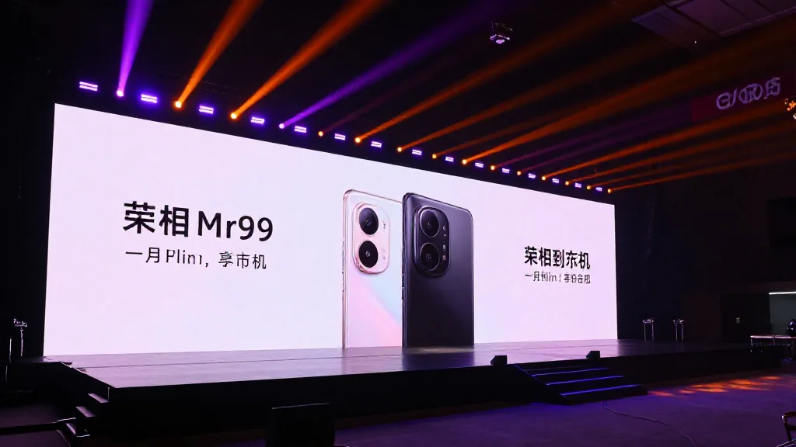
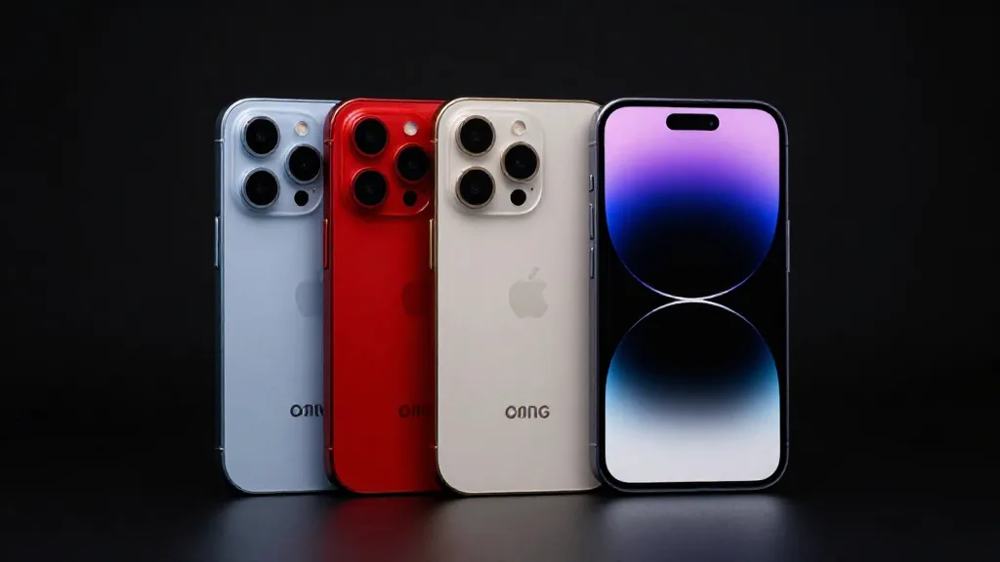
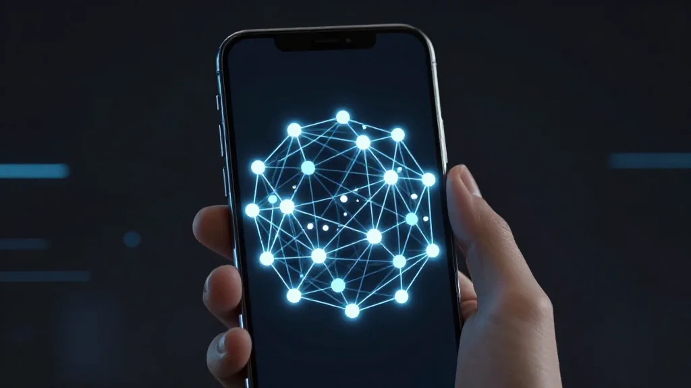

【鄭哥點評】 欄目：鄭哥博客點評
《二代豆包手機一秒破億——AI 手機大戰，我哋 70 後點睇》

圖片由 AI輔助創作（Z-Image-Turbo）
鄭哥 Hany · 2026年9月19日
今日睇到一個新聞，我手心出汗：
二代豆包手機銷售額「一秒破億」！
努比亞 NaviX Ultra，9月16日開售，5999元起。
加上 9月10日蘋果發佈會、9月7日華為三摺疊——
AI 手機大戰，一觸即發。
一、二代豆包嘅「一秒破億」

圖片由 AI輔助創作（Z-Image-Turbo）
數據
| 指標 | 數據 |
|---|---|
| 開售時間 | 2026 年 9 月 16 日 |
| 首銷銷售額 | 一秒破億 |
| 備貨 | 20 萬台（首批 10 萬） |
價格
| 版本 | 價格 |
|---|---|
| 512GB | ¥5999 |
| 512GB 高配 | ¥6499 |
| 1TB | ¥7499 |
賣點
- ✅ 第五代驍龍 8 至尊版
- ✅ 端側 AI 算力提升
- ✅ 橙色 AI 實體按鍵（機身側面）
- ✅ 系統級 Agent（AI 操作手機）
二、9月手機大戰——三家陣營

圖片由 AI輔助創作（Z-Image-Turbo）
字節 + 中興努比亞
路線：合作模式 + Android + 端側 AI
- 努比亞 NaviX Ultra
- 豆包手機助手
- 「AI 代為操作手機」（自動駕駛）
- 價格：3499-7499 元
蘋果
路線：自研 + iOS + Apple Intelligence
- iPhone 18 Pro/Max
- 首款摺疊屏 iPhone
- 時間：9 月 10 日發佈
- 目標：守住 AI 終端入口
華為
路線：自研 + HarmonyOS 7 + 達芬奇 NPU
- Mate XT 2（三摺疊）
- 300 億總參數 / 20 億激活
- MoE 全模態大模型入端
- 時間：9 月 7 日發佈
三、對蘋果嘅「隔空打破防」
蘋果嘅優勢
- ✅ iOS 封閉生態
- ✅ Apple Intelligence（Siri 升級）
- ✅ 高端用戶羣
豆包嘅優勢
| 維度 | 蘋果 | 豆包 |
|---|---|---|
| 價格 | iPhone 5999+ | 努比亞 3499 起 |
| 生態 | 封閉 | Android 開放 |
| AI 助手 | Siri | 豆包手機助手 |
| 跨應用 | 有限 | 系統級權限 |
| 合作 | 蘋果自家 | 中興 / vivo / 聯想 / 傳音 |
| 海外 | 強勢 | 待驗證 |
「隔空打破防」
豆包用「合作模式」：
中興努比亞（9月16日發售）
+
vivo / 聯想 / 傳音（推進中）
+
榮耀（從謹慎到水到渠成）
↓
Android 陣營全部接入
↓
蘋果封閉生態被「隔空」攻擊
四、華為端側 AI 嘅突破

圖片由 AI輔助創作（Z-Image-Turbo）
Mate XT 2 嘅端側 AI
技術參數：
- 達芬奇架構 NPU
- 300 億總參數
- 20 億激活參數
- MoE（混合專家）全模態大模型入端
系統級 Agent 能力
- ✅ 對話修改文檔
- ✅ 圖庫照片整理
- ✅ 跨設備文件查找
- ✅ 系統級 AI 權限
意義
「端側大模型」= 不需要雲端，手機即可跑大模型。
呢個系手機 AI 嘅下一步：
- ✅ 隱私保護（不上雲）
- ✅ 實時響應（無延遲）
- ✅ 離線可用
五、行業矛盾：手機廠商 vs 第三方 App
矛盾核心
手機廠商想要：
- ✅ 系統級 AI 權限
- ✅ 跨應用操作
- ✅ 取代 App 入口
第三方 App 想要：
- ✅ 保護自己嘅流量
- ✅ 不被 AI 取代
- ✅ 控制數據
實際衝突
- ⚠️ 微信、美團抵制豆包
- ⚠️ 限制 AI 調用部分接口
- ⚠️ 「AI 操作手機」與「App 利益」衝突
字節豆包應對
- ✅ 30 天規則公示
- ✅ 第三方可聲明操作邊界
- ✅ 明確拒絕嘅 App 不會被操作
- ✅ 與微信、美團談判中
六、QuestMobile 用戶數據
2026 年 5 月
| 維度 | 終端廠商 AI 應用 | AI 原生 App |
|---|---|---|
| 月活 | 7.55 億（+14%） | 4.99 億（+85.4%） |
| 月人均使用次數 | 51.4 次 | 92.7 次 |
| 月人均使用時長 | 9.8 分鐘 | 183 分鐘（+40%） |
關鍵洞察
「用戶並非不需要 AI，而是系統預裝的 AI 功能『用不起來』」
- ✅ 終端 AI = 體量大，使用淺
- ✅ AI 原生 App = 體量小，使用深
- ⚠️ AI Agent 仍難穿透「低頻次喚醒」
七、IDC 預測
| 指標 | 2026 年 |
|---|---|
| 中國新一代 AI 手機出貨量 | 1.47 億台 |
| 同比增長 | 31.6% |
| 佔整體市場 | 53% |
「2026 年系 AI 手機嘅爆發年，超過一半嘅新手機都系 AI 手機。」
八、對鄭哥 4 大業務嘅啓示
1. 電子消費品（音箱 / AI 終端）
啓示：
- ✅ AI 終端 = 巨大機會
- ✅ 我哋可以做 AI 音箱 + 大模型
- ✅ 跨境電商可推 AI 終端
行動：
- ✅ 關注 AI 終端供應鏈
- ✅ 準備 AI 音箱 + 大模型方案
- ✅ 印度 / 東南亞分銷
2. AI 算力
啓示：
- ✅ 端側 AI 算力 = 新需求
- ✅ 高通 + 國產芯片 = 機會
- ✅ 端雲協同 = 主流方案
行動：
- ✅ 關注端側 AI 芯片
- ✅ 提供端雲混合算力
- ✅ AI Native 設備算力服務
3. 跨境電商
啓示：
- ✅ 5999 vs 3499 = 海外性價比
- ✅ Android + 大模型 = 全球化
- ✅ 字節豆包海外擴張
行動：
- ✅ 關注 AI 手機出海
- ✅ 印度 / 東南亞 AI 終端供應
4. 年輕人投資
啓示：
- ✅ 字節跳動 = AI 手機概念股
- ✅ 中興通訊 = 硬件製造
- ✅ 高通 / 國產芯片 = 端側 AI
行動：
- ✅ 關注字節 / 中興股價
- ✅ 投資端側 AI 芯片產業鏈
九、70 後嘅 3 個判斷
圖片由 AI輔助創作（Z-Image-Turbo）
判斷 1：AI 手機大戰 = iPhone 時刻重演
2007：iPhone 重新定義手機
2026：豆包手機重新定義 AI 終端
意義：
- ✅ AI 從「軟件」變「硬件」
- ✅ AI 從「應用」變「操作系統」
- ✅ 入口之爭 = 下一個 10 年
判斷 2：合作模式 vs 自研模式
| 模式 | 代表 | 未來 |
|---|---|---|
| 合作開放 | 字節 + Android 多廠商 | 3-5 年主流 |
| 自研封閉 | 蘋果 + iOS | 高端用戶體驗 |
70 後嘅機會：
- ✅ Android + AI = 合作機會
- ✅ 端側 + 雲端 = 算力服務
- ✅ AI 硬件供應鏈 = 投資機會
判斷 3：端側 AI = 算力新戰場
未來 AI = 端側 + 雲端混合
- ✅ 手機端（NPU）
- ✅ 邊緣服務器
- ✅ 雲端大模型
70 後嘅優勢：
- ✅ 26 年電子行業經驗
- ✅ AI 硬件供應鏈 = 長期機會
- ✅ 端雲混合算力 = 服務市場
十、結語
二代豆包手機銷售額「一秒破億」：
豆包手機二代
↓
一秒破億
↓
AI 手機大戰
↓
蘋果 + 華為 + 字節
↓
端側 AI + 系統級 Agent
↓
AI 終端嘅「iPhone 時刻」
呢個唔只系一部手機嘅故事：
系 AI 時代嘅「入口之爭」
系 Android 陣營嘅「反擊」
系 中國大模型嘅「硬件化」
系 70 後嘅「新機會」
AI 終端嘅「iPhone 時刻」正式嚟咗。
你呢，準備好未？
📞 合作聯繫
WhatsApp: +852 6641 7912
七善門科技 · 星辰算力
*#二代豆包手機 #AI手機 #努比亞NavixUltra #蘋果 #華為 #字節跳動 #端側AI #安卓 #iPhone18 #70後 #跨境電商 #星辰算力 #七善門科技 #創業 #投資*
[Brother Hany's Take] Column: Hany Blog Review
Brother Hany's Take — Written from the front row of 26 years in trade. This is not a product review; it is a 70s-born trader's read of the AI phone war.
The news dropped this morning and my palms went cold:
Second-gen Doubao phone sales hit ¥100M in one second.
Nubia NaviX Ultra went on sale September 16 — starting at ¥5,999.
Stack that on top of Apple's September 10 event and Huawei's September 7 tri-fold launch —
and the AI phone war is officially live.
1. Second-gen Doubao's "¥100M in One Second"
圖片由 AI輔助創作（Z-Image-Turbo）
The numbers
| Metric | Value |
|---|---|
| Sale date | September 16, 2026 |
| First-sale revenue | ¥100M in 1 second |
| Inventory | 200,000 units (first batch 100K) |
Pricing
| Version | Price |
|---|---|
| 512GB | ¥5,999 |
| 512GB Premium | ¥6,499 |
| 1TB | ¥7,499 |
Selling points
- ✅ 5th-gen Snapdragon 8 Elite
- ✅ On-device AI compute boost
- ✅ Orange AI physical button (side frame)
- ✅ System-level Agent (AI drives the phone)
2. September Phone War — Three Camps
圖片由 AI輔助創作（Z-Image-Turbo）
ByteDance + ZTE Nubia
Path: Collaboration + Android + on-device AI
- Nubia NaviX Ultra
- Doubao Phone Assistant
- "AI operates the phone for you" (auto-driving mode)
- Price range: ¥3,499–7,499
Apple
Path: In-house + iOS + Apple Intelligence
- iPhone 18 Pro / Max
- First-ever foldable iPhone
- Date: September 10 launch
- Goal: Defend the AI entry point
Huawei
Path: In-house + HarmonyOS 7 + Da Vinci NPU
- Mate XT 2 (tri-fold)
- 30B total / 2B active params
- MoE multimodal model on device
- Date: September 7 launch
3. Doubao's "Long-Range Break" Against Apple
Apple's edge
- ✅ Closed iOS ecosystem
- ✅ Apple Intelligence (Siri upgrade)
- ✅ Premium user base
Doubao's edge
| Dimension | Apple | Doubao |
|---|---|---|
| Price | iPhone ¥5,999+ | Nubia from ¥3,499 |
| Ecosystem | Closed | Open Android |
| AI Assistant | Siri | Doubao Phone Assistant |
| Cross-app | Limited | System-level permission |
| Partners | In-house only | ZTE / vivo / Lenovo / Transsion |
| Overseas | Strong | Unproven |
"Long-range break"
Doubao bets on collaboration:
ZTE Nubia (sold Sep 16)
+
vivo / Lenovo / Transsion (in progress)
+
Honor (from caution to natural fit)
↓
Android camp unified
↓
Apple's walled garden hit "at range"4. Huawei's On-device AI Breakthrough
圖片由 AI輔助創作（Z-Image-Turbo）
Mate XT 2 on-device AI
Tech specs:
- Da Vinci architecture NPU
- 30B total parameters
- 2B active parameters
- MoE (Mixture-of-Experts) multimodal on device
System-level Agent capabilities
- ✅ Edit documents via chat
- ✅ Auto-organize photo gallery
- ✅ Cross-device file lookup
- ✅ System-level AI permission
Why it matters
"On-device LLM" = run a large model on the phone itself, no cloud required.
This is the next step for phone AI:
- ✅ Privacy (no upload to cloud)
- ✅ Real-time response (no latency)
- ✅ Works offline
5. Industry Conflict: Phone Makers vs Third-party Apps
The core tension
Phone makers want:
- ✅ System-level AI permission
- ✅ Cross-app operation
- ✅ Replace app entry points
Third-party apps want:
- ✅ Protect their traffic
- ✅ Not be replaced by AI
- ✅ Control their data
Real-world clash
- ⚠️ WeChat and Meituan resist Doubao
- ⚠️ Restrict AI from calling certain APIs
- ⚠️ "AI operates the phone" vs "app interests" clash
ByteDance Doubao's response
- ✅ 30-day public rule notice
- ✅ Third parties can declare operation boundaries
- ✅ Apps that explicitly refuse won't be operated
- ✅ Negotiating with WeChat and Meituan
6. QuestMobile User Data
May 2026
| Metric | OEM AI Apps | Native AI Apps |
|---|---|---|
| MAU | 755M (+14%) | 499M (+85.4%) |
| Monthly sessions / user | 51.4 | 92.7 |
| Monthly minutes / user | 9.8 | 183 min (+40%) |
Key insight
"Users don't reject AI — they reject the pre-installed AI features they can't actually use."
- ✅ OEM AI = big reach, shallow use
- ✅ Native AI apps = small reach, deep use
- ⚠️ AI Agent still struggles to break through "low-frequency wake"
7. IDC Forecast
| Metric | 2026 |
|---|---|
| New-gen AI phones shipped in China | 147M units |
| YoY growth | 31.6% |
| Share of total market | 53% |
"2026 is the breakout year for AI phones — more than half of new phones shipped will be AI phones."
8. What This Means for Hany's Four Lines of Business
1. Consumer Electronics (Speakers / AI Terminals)
Implication:
- ✅ AI terminals = massive opportunity
- ✅ We can build AI speaker + LLM bundle
- ✅ Cross-border e-commerce can push AI terminals
Action:
- ✅ Track AI terminal supply chain
- ✅ Prepare AI speaker + LLM solutions
- ✅ Distribution in India / Southeast Asia
2. AI Compute
Implication:
- ✅ On-device AI compute = new demand
- ✅ Qualcomm + Chinese chips = opportunity
- ✅ Device-cloud hybrid = mainstream path
Action:
- ✅ Watch on-device AI chips
- ✅ Offer device-cloud hybrid compute
- ✅ AI Native device compute service
3. Cross-border E-commerce
Implication:
- ✅ ¥5,999 vs ¥3,499 = overseas value play
- ✅ Android + LLM = global-ready
- ✅ ByteDance Doubao going overseas
Action:
- ✅ Track AI phones going overseas
- ✅ India / SEA AI terminal supply
4. Investing in Young Founders
Implication:
- ✅ ByteDance = AI phone concept stock
- ✅ ZTE = hardware manufacturing
- ✅ Qualcomm / Chinese chips = on-device AI
Action:
- ✅ Watch ByteDance / ZTE share prices
- ✅ Invest in on-device AI chip supply chain
9. A Gen-Xer's Three Calls
圖片由 AI輔助創作（Z-Image-Turbo）
Call 1: AI Phone War = iPhone Moment Replayed
2007: iPhone redefined the phone
2026: Doubao phone redefines the AI terminal
Meaning:
- ✅ AI shifts from "software" to "hardware"
- ✅ AI shifts from "app" to "operating system"
- ✅ Entry-point war = the next decade
Call 2: Collaboration vs In-house
| Model | Rep | Future |
|---|---|---|
| Open collaboration | ByteDance + Android makers | Mainstream in 3–5 years |
| Closed in-house | Apple + iOS | Premium UX |
Gen-Xer's window:
- ✅ Android + AI = partnership play
- ✅ Device + cloud = compute service
- ✅ AI hardware supply chain = investment angle
Call 3: On-device AI = The Next Compute Battlefield
The future of AI = device + cloud hybrid
- ✅ Phone (NPU)
- ✅ Edge server
- ✅ Cloud LLM
Gen-Xer's edge:
- ✅ 26 years in electronics
- ✅ AI hardware supply chain = long game
- ✅ Device-cloud hybrid compute = service market
10. Closing
Second-gen Doubao phone hit ¥100M in one second:
Doubao phone Gen-2
↓
¥100M in 1 second
↓
AI phone war
↓
Apple + Huawei + ByteDance
↓
On-device AI + system-level Agent
↓
AI terminal's "iPhone moment"This is not just a phone story:
It is the entry-point war of the AI era
It is the Android camp's counterattack
It is the hardware-ification of China's LLMs
It is a new opening for Gen-Xers like me
The AI terminal's "iPhone moment" is here.
Are you ready?
📞 Get in touch
WhatsApp: +852 6641 7912
Qishanmen Tech · Star Compute
#SecondGenDoubao #AIPhone #NubiaNavixUltra #Apple #Huawei #ByteDance #OnDeviceAI #Android #iPhone18 #GenXer #CrossBorderEcom #StarCompute #QishanmenTech #Startup #Investing